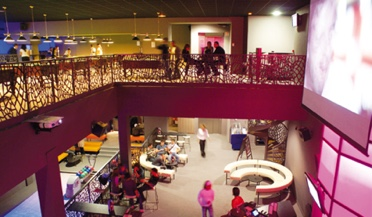
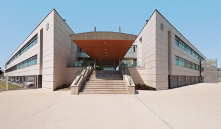

Le bâtiment est régi par une courbe à double inflexion qui s’avance dans le paysage vers le Morvan avec une tisanerie suspendue dans le vide à son extrémité. Différentes loggias ponctuent le bâtiment et offrent depuis l’intérieur autant de vues sur Château Chinon et la campagne environnante.
Construction de la délégation régionale du CNFPT à Poitiers (86)
Le bâtiment est régi par une courbe à double inflexion qui s’avance dans le paysage vers le Morvan avec une tisanerie suspendue dans le vide à son extrémité. Différentes loggias ponctuent le bâtiment et offrent depuis l’intérieur autant de vues sur Château Chinon et la campagne environnante. Lire la suite >

ARSENAULT Eric
Internat du lycée agricole à Château Chinon (58)
Au Nord une faille entièrement vitrée accompagnée par un voile en béton blanc courbe offre une transparence entre l’avenue et le jardin intérieur. Au Sud, un totem vitré lumineux visible depuis l’A86 englobe les salles de réunion. Lire la suite >
ARSENAULT Eric
Internat du lycée agricole à Château Chinon (58)
Au Nord une faille entièrement vitrée accompagnée par un voile en béton blanc courbe offre une transparence entre l’avenue et le jardin intérieur. Lire la suite >

ARSENAULT Eric
Internat du lycée agricole à Château Chinon (58)
Au Nord une faille entièrement vitrée accompagnée par un voile en béton blanc courbe offre une transparence entre l’avenue et le jardin intérieur. Lire la suite >
02
qui sommes-nous ?
Depuis 1990, la revue « L’Architecture de votre région » propose un panorama détaillé de l’architecture d’une région, d’un territoire ou d’un pays.
Les sondages réalisés attestent de sa durée de vie et par son aspect référentiel, de sa fréquente consultation.
Une part prépondérante est laissée à « l’image » - le soin apporté aux reproductions photographiques est la garantie d’une attention particulière des lecteurs.
La revue « L’Architecture de votre région » est le témoignage des hommes qui construisent aujourd’hui. Elle constitue ainsi la vitrine de leur création.
Par sa diffusion ciblée, c’est aussi un support d’une exceptionnelle efficacité et porteur d’image pour tous les partenaires rédacteurs, entreprises, institutionnels et sociétés qui y participent.